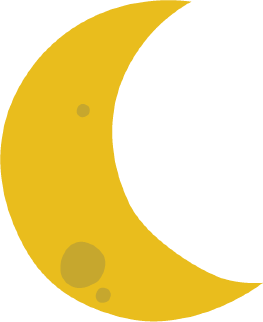

Para isso, organizamos encontros GRATUITOS, com vagas LIMITADAS.Utilizaremos salas virtuais EXCLUSIVAS para nos encontrar e discutir com total PRIVACIDADE a respeito de alguns assuntos.
É uma inciativa que envolve acolhimento, mas que, por ironia do destino, nasce em meio ao isolamento social. Estamos passando por um momento ímpar da humanidade: o afastamento físico imposto por um vírus. Mas o ser humano se reinventou e se aproximou virtualmente.
Como todo ciclo, essa fase teve um começo e também terá um fim.
Para muitas mulheres, algumas já pacientes da Reprodução Assistida, o sonho da gestação foi adiado pela pandemia de COVID-19.
Diante de uma doença nova, com tantas incertezas, a primeira recomendação foi que os tratamentos de reprodução assistida fossem suspensos. Hoje, já temos flexibilidade e alguns tratamentos estão sendo retomados.
Isso também vai passar!
Nosso objetivo, nesse momento, é oferecer suporte e ferramentas para que você passe por esse ciclo da melhor maneira possível. Nossa munição, nessa batalha, é a informação.
Por isso, você está convidada para participar de um ciclo de encontros EXCLUSIVOS para mulheres que encontram dificuldades na jornada para engravidar.
Queremos dividir conhecimento e, ao mesmo tempo, escutar e conhecer você, ajudá-la a passar por essa fase e prepará-la para o próximo ciclo, o da REALIZAÇÃO.
-
26/05/20 - TERÇA
Reserva ovariana e o impacto na fertilidade feminina;
-
29/05/20 - SEXTA
Etapas da fertilização in vitro;
-
02/06/20 - TERÇA
Fator masculino de infertilidade;
-
05/06/20 - SEXTA
Nutrição e fertilidade.
Todos os encontros serão ON-LINE e AO VIVO, sempre às 18h.
Se você se interessou e gostaria de participar do Projeto Ciclos,responda a TODAS as perguntas abaixo e seja muito bem-vinda!